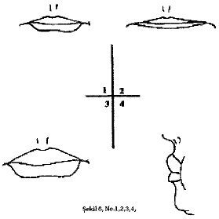

Ara ş t ı rma Serisi No.13
¯¯¯¯¯¯¯¯¯¯¯¯¯¯¯¯¯¯¯¯¯¯¯¯¯¯¯¯¯¯¯¯¯¯
24
Yüz Okuma Sanat ı
¯¯¯¯¯¯¯¯¯¯¯¯¯¯¯¯¯¯¯¯¯¯¯¯¯¯¯¯¯¯¯¯¯¯
No.3. yar ı inik üst göz kapa ğ ı alt ı ndan gözbebe ğ i sanki ı ş ı ğ a duyars ı z gibi duruyor ve "bulan ı k göz" ça ğ r ı ş ı m ı yap ı yor. Ka ş lar düzgün kavislidir. Göz kapaklar ı n ı n rengi kaçm ı ş . Kirpikler uzun ve seyrektir. Bunlar; korkusuz, gözüpek, ba ş kalar ı n ı n tutkular ı na derinden nüfuz edebilen, basiretli, parayla sat ı n al ı namayan ve ciddi, gaddarl ı ğ a varacak kadar adaletli tiplerdir.
No.4. Kapaklan ş i ş mi ş gibi, gözbebe ğ i büyük ve ifadesiz gözler. Kirpikleri ve ka ş lar ı s ı k ve uzundur. Tek bir kelime ile ifade etmek gerekirse - "uyu ş uk" gözler. Bunlar; uyu ş uk, kay ı ts ı z, dar kafal ı , enerjik olmayan, fakat bu pasiflik içinde gözlemleme yetene ğ inden de yoksun olmayan tiplerdir. Bununla birlikte, bu tipler muhtemelen yumu ş ak karakterli oluyorlar.
No.5. Geni ş aç ı lm ı ş , ruh halinin de ğ i ş mesine ba ğ l ı olarak ifadesi de de ğ i ş en gözler. Konu ş ma zaman ı genelde do ğ rudan muhatab ı n ı n gözünün içine bakar. Ka ş lar ortadan yukar ı ya do ğ ru kalk ı yor ve ş akaklara do ğ ru a ş a ğ ı iniyor. Kirpikler keskin bir ş ekilde yukar ı ya do ğ ru katlanm ı ş t ı r. Bunlar; enerjik, aktif, ba ş ı na buyruk veya ters, rica ve emirlerin yava ş yerine getirilmesine tahammül edemeyen, cesur, kararl ı , cesurlu ğ u sayesinde a ş ı r ı aç ı k sözlüdür.
No.6. A ğ ı r göz kapaklar ı aras ı ndan küçük görünen gözler. Gözbebe ğ inin hareketli olmas ı na ra ğ rnen rengi kaçm ı ş bir görünüm olu ş turuyor. Kirpikleri seyrek, ka ş lar ı küçük ve seyrektir. Bunlar; yüksek manevi de ğ erlere sahip olmayan, cimri, kurnaz, pratik ve uyan ı k tiplerdir. Yapt ı klar ı iyilikler samimi- yetten de ğ il, ç ı karc ı l ı ktan kaynaklan ı yor. Bencil ve riyakard ı rlar.
Dudaklar

Hatlar ı belirgin olan dudaklar (hafiften ş i ş kin) ( Ş ekil 5, No. 1) - iyi kalpli, samimi, içten, ne ş eli ve genelde kötü huylardan çok iyi huylara meyilli olan tipler.
İ nce dudaklar ( Ş ekil 5, No. 2) - kurnaz, bencil, gaddar, alayc ı , gizemli, riyakar, sömürücü tipler. Kal ı n dudaklar ( Ş ekil 5, No. 3) - duyarl ı l ı k ve çe ş itli a ş a ğ ı l ı k içgüdüleri. Çok ender hallerde iyi kalplilik..
Ay ı r ı c ı çizgileri olan çocuksu dudaklar ( Ş ekil 5, No. 4) - saf ve içten.
__________________________________________________________________
© WWW.MAXIMUMBILGI.COM